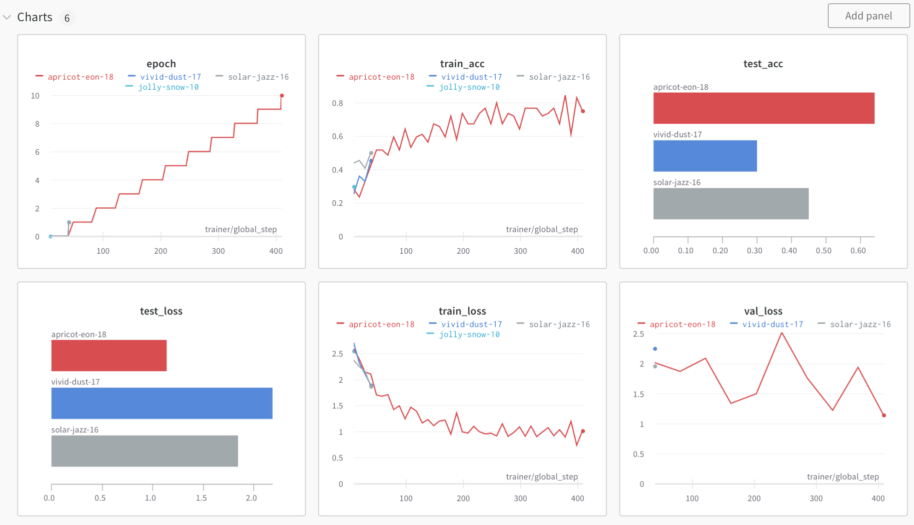
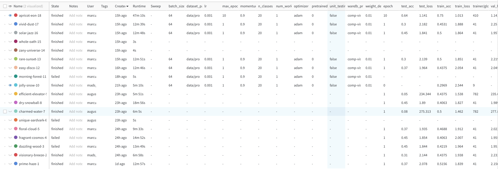
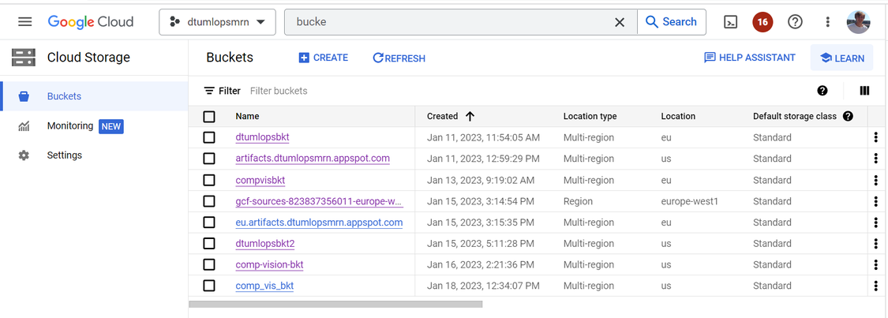
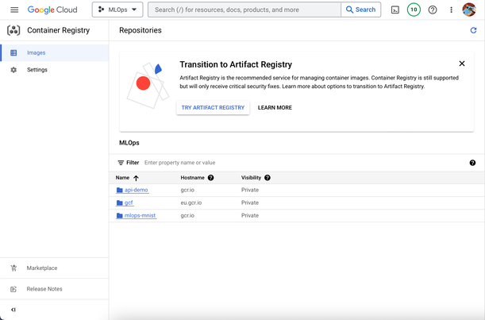
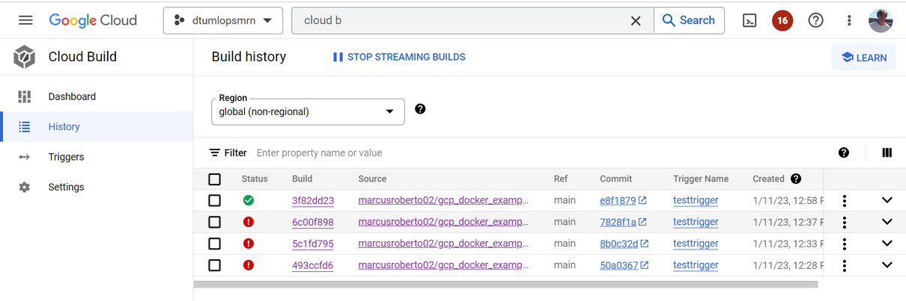
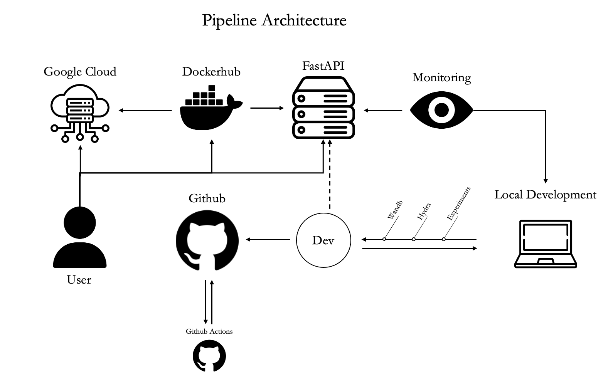

This is the report template for the exam. Please only remove the text formatted as with three dashes in front and behind like:
--- question 1 fill here ---
where you instead should add your answers. Any other changes may have unwanted consequences when your report is auto
generated in the end of the course. For questions where you are asked to include images, start by adding the image to
the figures subfolder (please only use .png, .jpg or .jpeg) and then add the following code in your answer:
markdown

In addition to this markdown file, we also provide the report.py script that provides two utility functions:
Running:
bash
python report.py html
will generate an .html page of your report. After deadline for answering this template, we will autoscrape
everything in this reports folder and then use this utility to generate an .html page that will be your serve
as your final handin.
Running
bash
python report.py check
will check your answers in this template against the constrains listed for each question e.g. is your answer too short, too long, have you included an image when asked to.
For both functions to work it is important that you do not rename anything. The script have two dependencies that can
be installed with pip install click markdown.
Enter the group number you signed up on
Answer:
Group 15
Enter the study number for each member in the group
Answer:
August Brogaard Tollerup: s204139, Marcus Roberto Nielsen: s204126, Mads Vibe Ringsted: s204144
What framework did you choose to work with and did it help you complete the project?
Answer length: 100-200 words.
Example: We used the third-party framework ... in our project. We used functionality ... and functionality ... from the package to do ... and ... in our project.
Answer: In this project we made use of two different frameworks to build and train our deep learning models. The first framwork is the pytorch image models (timm) We used this framwork to find a deep convolutional neural network architecture which we could use for our model. We chose the resnet18 which has approx. 11.2 million parameters, and it also had the the same input feature dimension requirement as to that of the images in our dataset. To make the training process easier we chose to implement the pytorch lightning framwork. This framework makes training easier by implementing a trainer object, which can be customized with various callback functions. Additionally pytorch lightning is also integrated with wandb, which makes the logging of the training process very simply and easy.
In the following section we are interested in learning more about you local development environment.
Explain how you managed dependencies in your project? Explain the process a new team member would have to go through to get an exact copy of your environment.
Answer length: 100-200 words
Example: We used ... for managing our dependencies. The list of dependencies was auto-generated using ... . To get a complete copy of our development enviroment, one would have to run the following commands
Answer:
For our project we used both conda and standard python virtual environments to manage dependencides. In order to generate the dependencies we used the following command: pip freeze > requirements.txt. This creates a requirements.txt file that contains a list of alle the packages that are installed in the current environment. In addition we added "-e ." to the requirements file, this is used to install all environment variables needed to make the cookie cutter project template function. To get a complete copy of the environment one has to create a new virtual environment, clone the repo and run: pip install -r requirements.txt. This should install all the required dependencies to execute the project. In addition the user must ensure they have docker, make, gcloud and git installed
We expect that you initialized your project using the cookiecutter template. Explain the overall structure of your code. Did you fill out every folder or only a subset?
Answer length: 100-200 words
Example: From the cookiecutter template we have filled out the ... , ... and ... folder. We have removed the ... folder because we did not use any ... in our project. We have added an ... folder that contains ... for running our experiments. Answer: From the cookiecutter template we have altered and made changes to the src, data and models directories. We have filled these with code and data relating to our project. The src folder also includes a config directory to track our experiments. The standard report folder has been changed to contain the report format required for this course. In addition we have added the following folders: app, tests and wandb. The tests folder relates to continious integration and contains unit testing of our data processing, model architechture and training process. The app directory contains our deployed model utilizing the Fastapi framework. Lastly wandb is used to log our experiments and get some neat visualization of our models training progress and performance level.
Did you implement any rules for code quality and format? Additionally, explain with your own words why these concepts matters in larger projects.
Answer length: 50-100 words.
Answer:
The rules for code qulity and format for this project follows the pep8 python style, to ensure this we utilize the python package called black. This package automatically change all python files to follow this style. In addition we use the isort package to sort all of the import statements in alphabetical order. These concepts and rules are very important for codebases with many contributors, as everything is much more efficient to read when all the developers follows the same schemes and rules. Overall it makes the code easier to read and change.
In the following section we are interested in how version control was used in your project during development to corporate and increase the quality of your code.
How many tests did you implement?
Answer:
For our project we implemented a total of 6 unit tests: 3 relating to data, 2 relating to the model and 1 to test the training of the model.
What is the total code coverage (in percentage) of your code? If you code had an code coverage of 100% (or close to), would you still trust it to be error free? Explain you reasoning.
Answer length: 100-200 words.
Example: The total code coverage of code is X%, which includes all our source code. We are far from 100% coverage of our code and even if we were then...*
Answer:
The total code coverage of code is 71%, which includes all our source code. We are not that far from 100% coverage of our code and even if we were then there can always be unexpected behaviors given we have not tested every possible scenario of input data. In addition the test scripts produced in this project, was mostly to indicate that we are able to write unit tests in order to check if our code is running correctly.
Our lowest coverage is in src/models/utils.py with 16% coverage. One could argue the relevance of some of the tests. We checked coverage for some files that were empty and therefore returned 100% coverage. That is also why the metric is not really indicative for how well the tests are run, but only how much of the code is "covered". Therefore, focus should be on writing good tests and not many tests - Quality of Quantity.
Did you workflow include using branches and pull requests? If yes, explain how. If not, explain how branches and pull request can help improve version control.
Answer length: 100-200 words.
Example: We made use of both branches and PRs in our project. In our group, each member had an branch that they worked on in addition to the main branch. To merge code we ...
Answer:
In our group we tried to use branches and PRs at first, but ran into various issues with merging conflicts. We ran into this issue because all of us did changes to various parts of the project simultaneously, resulting in us making changes to the same parts of the code base when changing and testing code. Later we just decided to push to main branch, as it was easy to just discard the local changes that resulted in merge conflicts and commit the non conflicting changes. However, this is not best practice as it is not stable to make changes directly to the main branch, as the should be a tested and working version of the product. In addition branches let people develop new features and make changes without ever running into problems with other peoples changes. Pull requests can then be setup to check if the merging branch is stable enough to get updated to the main branch (passing some tests). This ensures that workflow is optimized for developers and that the main product avoid suddenly crashing and not working as expected.
Did you use DVC for managing data in your project? If yes, then how did it improve your project to have version control of your data. If no, explain a case where it would be beneficial to have version control of your data.
Answer length: 100-200 words.
Example: We did make use of DVC in the following way: ... . In the end it helped us in ... for controlling ... part of our pipeline
Answer:
For our project we tried to implement DVC and then store our data in a google cloud bucket. However, we ran into many issues and ended up not being able to resolve them, thus we choose to not implement DVC. DVC is not that crucial for this project as we are only working with at single version of the dataset. DVC (if it worked) could have saved us some time transfering the dataset between the group. In addition DVC could have be useful if we chose to augment the images with some noise and thereby create a new dataset. DVC would allow us to easily store this new dataset as a version 2, which would safe us from doing the augmentation at runtime. With DVC we would also be able to easily swap between the dataset versions.
Discuss you continues integration setup. What kind of CI are you running (unittesting, linting, etc.)? Do you test multiple operating systems, python version etc. Do you make use of caching? Feel free to insert a link to one of your github actions workflow.
Answer length: 200-300 words.
Example: We have organized our CI into 3 separate files: one for doing ..., one for running ... testing and one for running ... . In particular for our ..., we used ... .An example of a triggered workflow can be seen here:
Answer:
For this project we have done continuous integration on unittesting, linting and dockerimage creation. We have a total of 4 different workflows running on github actions when pushing to the main branch. The first workflow runs our unittests and check if the changes have effected the properties of the model, data and the training process. Two of the workflows are related to linting and checks if the code is compliant with pep8 using flake8 and if the imports are sorted using isort. The last workflow is creating a docker image and pushing it to docker hub. It creates and runs a fastapi application with a trained model to predict images. All of our continuous integration workflows run on both ubuntu and windows operating system, this is to ensure that our application works in general. Furthermore, we also ran tests on both python 3.9 and 3.10 to check if a newer python version breaks some of the code. To ensure full general viability/useability of our code base we could test even more operating systems and python versions, however since this is simply a test project it was easier to filter through the tests on github when only testing the four combinations.
In the following section we are interested in learning more about the experimental setup for running your code and especially the reproducibility of your experiments.
How did you configure experiments? Did you make use of config files? Explain with coding examples of how you would run a experiment.
Answer length: 50-100 words.
Example: We used a simple argparser, that worked in the following way: python my_script.py --lr 1e-3 --batch_size 25
Answer: For our project we configured experiments using hydra. we utilized a double config structure: a default config specifing what experiment to use and second a config file with the experiment hyperparameters. To run a experiment we simply run:
make trainTo configure an experiment we create an experiment yaml file with the following params: ``` hyperparameters: epochs: 1 lr: 0.001 batch_size: 64 dataset: 'data/processed' n_classes: 20 weight_decay: 0 opt: 'adam' # optimizer momentum: 0.9 unit_testing: False
Then in the default config file the experiment name is changed
defaults:
- experiment: train
Reproducibility of experiments are important. Related to the last question, how did you secure that no information is lost when running experiments and that your experiments are reproducible?
Answer length: 100-200 words.
Example: We made use of config files. Whenever an experiment is run the following happens: ... . To reproduce an experiment one would have to do ...
Answer:
This project utilizes the framwork hydra to ensure reproduceability of the trained models. Hydra allows for easy storage of experiments and logs the used hyperparameters of the experiment. Whenever an experiment is run various metric such as training, test and val loss and accuracies are uploaded to wandb and nicely visualized. In addition wandb also tracks the hyperparameters of the given experiment such that they can be easily recreated and the model can be reproduced. So to create a new experiment with the same configuration, one has to create a new yaml file in the src/models/conf/experiment directory with the given hyperparameters, and then in the default config file in src/models/conf change the experiment name to the newly created file. To be even more reproduceable we could add seeds to our code so it runs the same on all machines.
Upload 1 to 3 screenshots that show the experiments that you have done in W&B (or another experiment tracking service of your choice). This may include loss graphs, logged images, hyperparameter sweeps etc. You can take inspiration from this figure. Explain what metrics you are tracking and why they are important.
Answer length: 200-300 words + 1 to 3 screenshots.
Example: As seen in the first image when have tracked ... and ... which both inform us about ... in our experiments. As seen in the second image we are also tracking ... and ...
Answer:
For our project we have used wandb to track and log our experiments. Wandb is well integrated in pytorch lightning, which is the framework we used using for our project. Wandb automatically genereates graphs and tracks the training and performance of the model.

As seen in the above image wandb automatically creates graphs that keeps track of the training, testing and validation processes. The plots shows how the loss and accuracy decrease as a function of epochs for both training and validation. These visuals helps us keep track of the training process and see if the model is acutally training and how the current experiment setting performs. In addition we also track the experiment settings in wandb in the table tab seen in the below image

In the table all the hyperparameters for each experiment is stored, making it easy to create a new config file to replicate a given experiment setting. In addition the table also contains the performance metrics of the model from the last epoch of training. This allows for a quick overview of what experiments have resulted in good performance. Lastly, the table also includes meta data related to the training of the model, this includes if the training completed or failed and the runtime of the training. This meta data also helps in the choosing of model architechture as two models can have similar performance but vastly different training times.
Docker is an important tool for creating containerized applications. Explain how you used docker in your experiments? Include how you would run your docker images and include a link to one of your docker files.
Answer length: 100-200 words.
Example: For our project we developed several images: one for training, inference and deployment. For example to run the training docker image:
docker run trainer:latest lr=1e-3 batch_size=64. Link to docker file:Answer:
For our project we decided to dockerize our FastAPI application, that utilizes our trained image classifier. This application has a minimalistic UI design, but takes an image as input and returns the classification on a new page. Furthermore, the prediction is added to a prediciton database which is used for data monitoring - also run and accesible through the API. Lastly, our API application is monitored by signoz, which provides us with telemetric data for our application. The Docker image is run with the following command:
docker run -e WANDB_API_KEY=<wandb_api_key> -p 80:80 <image_id>
Dockerfile: https://github.com/4ug-aug/mlops-comp-vision/blob/master/app/Dockerfile
Additioanlly we created a dockerfile to train our model.
When running into bugs while trying to run your experiments, how did you perform debugging? Additionally, did you try to profile your code or do you think it is already perfect?
Answer length: 100-200 words.
Example: Debugging method was dependent on group member. Some just used ... and others used ... . We did a single profiling run of our main code at some point that showed ...
Answer:
Debugging in this project mostly revolved around resolving issues related to all the new framworks and tools we have been introduced to in this courve. This required a lot of googleing and error message decoding. However, the debugging of the code was mostly done by using the integrated debugger in vscode and by doing the good old print statements (which probably was suboptimal). We did not choose to run profiling of our code, as we used framworks for both our model architecture and training loop, these frameworks are assumes to be already optimzed. However, profiling could have identified if data proccessing could have been optimized.
In the following section we would like to know more about your experience when developing in the cloud.
List all the GCP services that you made use of in your project and shortly explain what each service does?
Answer length: 50-200 words.
Example: We used the following two services: Engine and Bucket. Engine is used for... and Bucket is used for...
Answer:
When trying to implement DVC we set up a google cloud bucket, this is a service that allows for storage of data in the cloud. The data can then be fetched from the bucket if a user have access to it.
Another cloud service we used for this project was the google cloud run. This service allows for running/hosting docker containers in the cloud. We used this to deploy our API application to the cloud.
The backbone of GCP is the Compute engine. Explained how you made use of this service and what type of VMs you used?
Answer length: 50-100 words.
Example: We used the compute engine to run our ... . We used instances with the following hardware: ... and we started the using a custom container: ...
Answer:
For this project we did not prioritize training out model on the GCP, as we focused on setting up many of the other pipelines. If we were to train our model on GCP we would create a pytorch gpu instance using one of googles preset images, then clone our git repo and run the make train command. We could then extract the trained model file that is saved when the training is done.
Insert 1-2 images of your GCP bucket, such that we can see what data you have stored in it. You can take inspiration from this figure.
Answer:

Upload one image of your GCP container registry, such that we can see the different images that you have stored. You can take inspiration from this figure.
Answer:

Upload one image of your GCP cloud build history, so we can see the history of the images that have been build in your project. You can take inspiration from this figure.
Answer:
 This is a screenshot from some of our exercises as we did not get to implement the automatic building of the dockerimages for this project.
Did you manage to deploy your model, either in locally or cloud? If not, describe why. If yes, describe how and preferably how you invoke your deployed service?
Answer length: 100-200 words.
Example: For deployment we wrapped our model into application using ... . We first tried locally serving the model, which worked. Afterwards we deployed it in the cloud, using ... . To invoke the service an user would call
curl -X POST -F "file=@file.json"<weburl>Answer:
The deployment of our model was done locally. We did this by building a fastapi application that allows users to upload images which the model predicts and returns the classification. In addition the API also stores the uploaded data and use this new data to perform data monitoring and create reports that check for data quality and data drifting. To invocation of the model is done trough the simple frontend of the webpage, which is found at the root of the local host.
In addition we also hosted our application in google cloud run, such that we can access it online at this link https://api-demo-lhjnjgcnya-ew.a.run.app. To acceess the application google cloud run provides an url which leads to the frontend.
Did you manage to implement monitoring of your deployed model? If yes, explain how it works. If not, explain how monitoring would help the longevity of your application.
Answer length: 100-200 words.
Example: We did not manage to implement monitoring. We would like to have monitoring implemented such that over time we could measure ... and ... that would inform us about this ... behaviour of our application.
Answer:
For our deployed model we implemented local monitoring that stores newly uploaded images and predictions in a csv file. In addition to this we use a python framework: evidently, that checks if our data and predictions are drifting/changing from the training distributions. We have also implemented signoz to track our application and store various metric regarding the usage of our deployed model.
For our google cloud deployment in cloud run, google provide monitoring of the application.
With the monitoring we are able to see how people interact with our model and if the model have any problems/challenges when inferring on new data.
How many credits did you end up using during the project and what service was most expensive?
Answer length: 25-100 words.
Example: Group member 1 used ..., Group member 2 used ..., in total ... credits was spend during development. The service costing the most was ... due to ...
Answer:
One of our group members spent all of his credits over night for unknown reasons (they disappeared without logging of what they where used on), the other group memebers have used credits on google cloud bucket and google cloud run. The cost have been minimal.
In the following section we would like you to think about the general structure of your project.
Include a figure that describes the overall architecture of your system and what services that you make use of. You can take inspiration from this figure. Additionally in your own words, explain the overall steps in figure.
Answer length: 200-400 words
Example:
The starting point of the diagram is our local setup, where we integrated ... and ... and ... into our code. Whenever we commit code and puch to github, it auto triggers ... and ... . From there the diagram shows ...
Answer:
The starting point of the diagram is our local setup, here we train, cofigure and log our machine learning models. This is shown in the diagram by a back and forth arrows between the local development and the dev. When a satisfied experiment is run, the developer commits and push the configuration and models checkpoint to github, which is shown by the diagram from the connection between Dev and github. The diagram shows that Github is connected to itself, this is due to Github on receiving a push from a dev triggers all of the integrated workflows of unittesting, linting and dockerimage building. If all the tests passes the code is working properly and two dockerimages are created and pushed to dockerhub. One of the dockerimages contains the deployed model in an API. This API can also be run locally shown by the dotted line from dev to the FastAPI. Here the model performance and data is monitored . The API itself is also monitered sending the localhost telemetric data. The dockerimage of the API can also be deployed to google cloud run to be hosted in the cloud, this makes it available to all that have the api url from google cloud.

Discuss the overall struggles of the project. Where did you spend most time and what did you do to overcome these challenges?
Answer length: 200-400 words.
Example: The biggest challenges in the project was using ... tool to do ... . The reason for this was ...
Answer:
Overall the entire project and course have run smoothly and we ended up with a nice mlops setup for our image classification model. However, we have a few challenges troughout the project. The first big challenge was to get DVC to work, every time we tried to add our data files to google cloud bucket it just kept loading for hours and never finished. We where not able to resolve the issue and hence we dropped trying to implement DVC. The fact that we could not implement DVC lead to some subproblems of transfering the dataset to each other and doing the data processing, this was a bit tedious but worked out.
Another big challenge for us was working with docker, it was rather frustrating to build docker images as they took long time to build and takes up a lot of disk space. This made them hard to debug, since we had to wait a long time for each docker image to build before we could test it. It was especially frustrating when everything worked locally, but the docker image failed. It was also complicated intregrating the API in our dockerimages, this resulted in many errors with setting up the right port to acces the localhost.
State the individual contributions of each team member. This is required information from DTU, because we need to make sure all members contributed actively to the project
Answer length: 50-200 words.
Example: Student sXXXXXX was in charge of developing of setting up the initial cookie cutter project and developing of the docker containers for training our applications. Student sXXXXXX was in charge of training our models in the cloud and deploying them afterwards. All members contributed to code by...
Answer: Student s204126 was in charge of setting up Pytorch Lightning and Weights and Biases integration. Furthermore, he contributed to making the dataset alongside student s204144. Moreover, contributed to setting up google cloud. Additionally he resolved isort and flake8 errors in the codebase. Lastly, he set up hydra for the project hyperparameter configuration.
Student s204144 was in charge of setting up github workflows, pytest and coverage. Furthermore, he contributed to writing the report and creating the dataset alongside student s204126. Lastly, helped create and train the model.
Student s204139 was in charge of setting up the FastAPI application, docker images and dockerhub and Signoz and Data Drifting monitoring. Furthermore, helped setup Cloud Run to run the FastAPI application.
--- question 27 fill here ---
{kind=link}
{kind=link}
{kind=link}
{kind=link}
{kind=link}